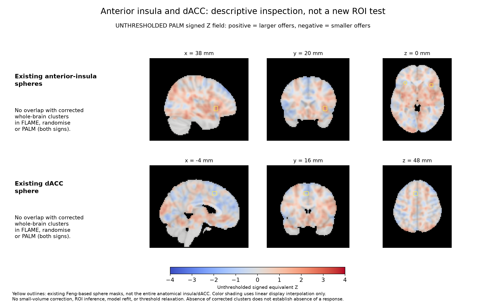
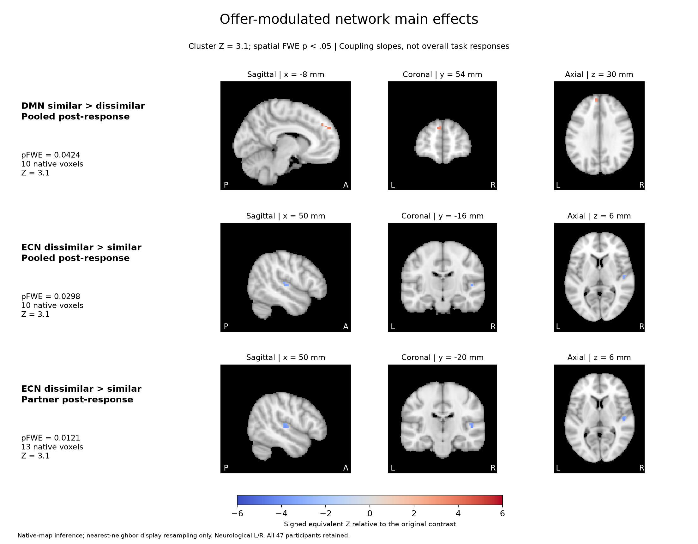
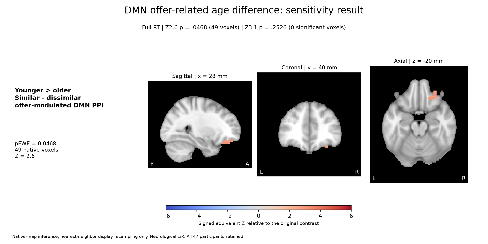
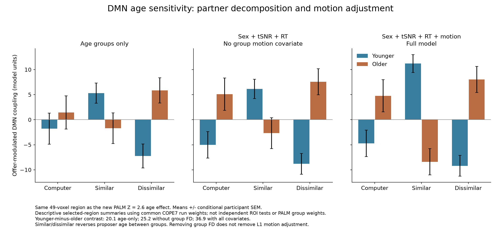
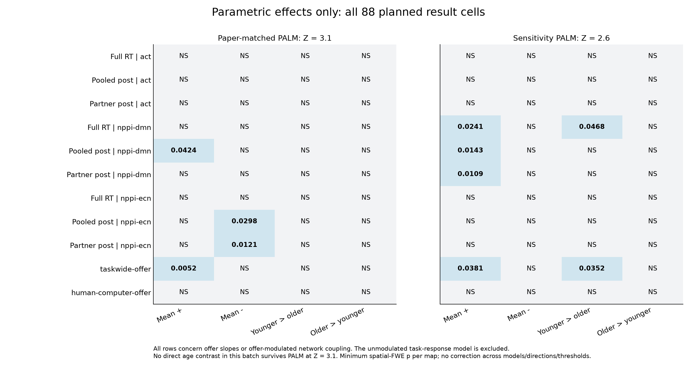

SRNDNA Ultimatum: parametric effects
Revised 2 November 2026. Imaging scope: offer slopes and offer-modulated PPI only.
Across all three partners and age groups, positive offer-related activation converges posteriorly. Historical FLAME also detects a positive right-insula cluster; randomise/PALM do not confirm it. No corrected negative offer-slope cluster or dACC result is established. No direct age contrast in this parametric PALM batch survives Z = 3.1.
Offer activation | Collapsed across partners and age groups

Participant COPE11 averages computer, similar-partner and dissimilar-partner offer slopes with equal one-third weights. The group intercept averages all 47 participants with age and nuisance covariates centered. PALM detects 45 posterior voxels; randomise detects 95. Historical FLAME additionally detects an 82-voxel right-insula cluster (p = .000129; peak [40.3, 1.29, 5.22]). That cluster increases with larger offers and has no corrected randomise/PALM overlap. This is not evidence of the classic smaller-offer/unfairness response. The historical FLAME map has five positive clusters, 348 voxels in total.
Insula/dACC | Existing masks and unthresholded field

These images explain the sign and anatomical position of the existing maps; colored voxels are NOT significance claims. Neither the predefined anterior-insula spheres nor the dACC sphere contains a corrected whole-brain significant voxel in either direction. The positive historical FLAME insula cluster is more posterior than the anterior-insula spheres. No new ROI statistical test was run.
Offer-modulated network main effects

Small full-sample partner differences in offer-modulated coupling. They are not age effects and are absent at this threshold in the full-RT model. Tissue localization and influence checks remain.
DMN offer-related age difference: sensitivity result

The lower-threshold map matches the retained 49-voxel descriptive extraction region. No direct age contrast in this parametric PALM batch survives the paper-matched Z3.1 threshold.
Sensitivity Figure | DMN three-partner bars

The age-gap direction is present before group motion adjustment, but its magnitude increases substantially after adjustment. The apparent crossover corresponds to positive offer-related coupling for younger proposers and negative coupling for older proposers in both participant groups. The computer condition supplies context and is not part of the similar-minus-dissimilar contrast. No new ROI significance test is performed.
Draft Figure 1 | Corrected social-choice behavior

Acceptance increased with offer size. The corrected random-intercept/random-offer-slope model converged without singularity. No reliable age or age-by-partner moderation was detected; this does not establish equivalence. Points show observed participant means and SEM, rather than a conditional logistic curve at zero random effects. Similar/dissimilar refer to proposer age relative to the participant. Offer amount also changes the participant's monetary payoff.
Draft Figure 2 | Partner ratings

Humans were rated fairer and more likeable than the computer before and after the task. The corresponding similar-minus-dissimilar comparisons are nonsignificant after BH adjustment. These are ratings in a subsample, not evidence that partner ratings mediate an age effect.
Parametric inventory | All means and age directions

The unmodulated human-computer task-response model is removed. All 11 parametric models and both signed mean/age directions are shown. No direct age contrast in this batch survives at Z = 3.1. Lower-threshold DMN and task-wide offer age findings remain sensitivity results. Age-by-behavior interactions are separate analyses.